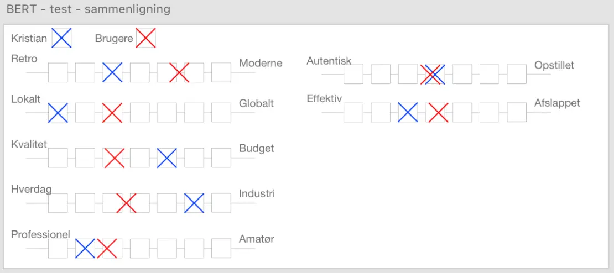

Redesign
I en gruppe på fire fik til opgave at redesigne en selvvalgt virksomheds website. Redesignet skal bestå af et kodet website og indholdsproduktion i form af tekst, foto og video. Derudover skulle vi også dokumentere vores arbejdsproces undervejs. Vi valgte Custom Coffe, som er kaffeforretning der sælger kaffe, kaffemaskiner, service til opsætning + reparation til virksomheder. Derudover tilbyder de events (grundkurser i kaffebrygning og baristatræning).
Nuværende site
Test
BERT-test
Brugerne synes som udgangspunkt, at det nuværende site er moderne, kvalitetsbevidst og professionelt. Vi har sammenlignet brugernes svar med ejeren, som egentligt er enige mange steder, men godt kunne ligge endnu tættere i de fire første i BERT-testen.
5-sekunders test
Ud fra vores 5-sekunders test, oplever brugeren at det handler om kaffe og bæredygtighed, men egentlig hurtigt får et indtryk af, at den er meget uoverskueligt.
Styletile
Fotostil
Billederne på websitet har kontrast, en klar farvekodning, virklighedsnære, billederne er "hårdt beskåret" og vises kun i den ene side.

Produktbilleder
Rene og klare neutrale farver, opstillet billeder.

Farveanalyse
Farverne er naturlige - grøn, blå, brun og beige går igen:

Typografi
De bruger mange forskellige Typografi, som gør noget at teksten svær at læse og uoverskuelig. De har heller ikke en rød tråd, da de også bruger forskellige farver til fonten.

Ikoner

Research om virksomheden
Wireframe af nuværende site
Redesign
Moodboard

Styletile

Wireframe
Vi lavede en wireframe for at give et overblik over hvordan vi ville opstille vores website. Vores fokus var at gøre hjemmeside mere overskuelig og enkel, vi holdte en rød tråd med den samme farvekombination og opsætning. På alle undersiderne finder man en beskrivende tekst eller video, der giver brugeren mulighed for at få et overblik. Custom Coffe's ønske var blandt andet en hjemmeside uden for mange klik, derfor har vi prøvet at kombinere nogle af undersiderne. Vi har gjort det tydeligt for virksomheder (som er den primære målgruppe) hvor de kan kontakte Custom Coffe, da dette også var en af deres ønsker.

Storyboard

Interview guide

Web og mobil version

Styletile for redesign

Test
Tænke højt test
Med vores "tænke højt test" blev vi klogere på brugerens oplevelse af redesignet. Brugeren møder som det første en splash-video, der giver dem en nysgerrighed. Brugeren oplevede også et roligt og enkelt udtryk på sitet. Derudover var der en oplevelse af forvirring, da de troede det var en Café og ikke en kaffeforretning.

Heuristisk test
Med denne test fandt vi fejl og mangler på vores site, som skulle rettes op. Det var heldigvis hurtigt klaret, men det var rart at få nogle andre øjne på værket.

Konklusion
Hvad kan det nye site bedre end det gamle?
Det er mere overskueligt. Det er nemmere at komme til “shop” og “kontakt”, som var Custom Coffe's ønsker. Pænere farver. Vores redesign fortæller mere om ejerne bag, end det gamle site gjorde. Vi har designet det sådan, at der er færre brugerrejser (færre “clicks”), præcis som Custom Coffe ville have det. Vi har tilføjet video, som de ikke havde før, samt portrætfotos af de to ejere, så nu får man et større kendskab til dem og deres virksomhed.
Hvilke testresultater har givet påvirket redesign-løsningen. Og hvordan?
Ud fra vores test, blev vi klogere på at brugeren syntes det var forvirrende med forskellige fonte, derfor har vi ændret fonten, så der er en rød tråd. Vi har samlet informationen på sitet, og gjort det mere overskueligt for brugeren.
Hvad ville vi evt. have gjort anderledes.
Vi kunne have forberedt vores produktionsdag bedre i forhold til headshots og b-rolls. Vores headshots blev meget mørke og dårligt belyst, da vi tog dem sidst på dagen. Videolampen som vi havde lånt hjalp lidt, men det var ikke optimalt.